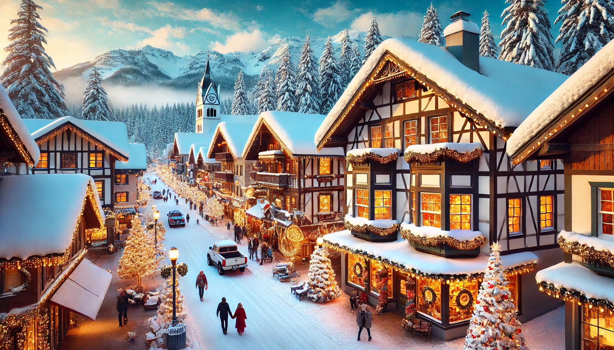
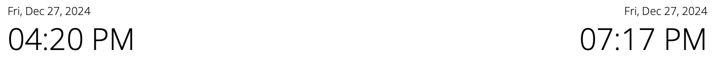

I am thrilled to share the exciting news that you and I will soon embark on an unforgettable journey together! We'll be taking a trip that promises to be filled with memorable experiences, adventures, and opportunities to connect even more deeply. I can't wait to see where our travels take us, and I am so looking forward to sharing this special time with you.
We will be heading to the charming and picturesque town of Leavenworth, Washington, nestled in the heart of the Cascade Mountains. Known for its Bavarian-style architecture, beautiful alpine scenery, and vibrant festivals, Leavenworth offers a unique blend of European charm and natural beauty. This delightful destination promises to be the perfect backdrop for our adventure, filled with cozy moments, outdoor exploration, and plenty of local delights to enjoy. I can't wait for you to experience the magic of Leavenworth!


Our travel dates are set during the holiday season, a time when everything feels extra magical and festive! The town will be beautifully decorated with sparkling lights, holiday markets, and charming seasonal displays, making it a truly enchanting place to visit. We’ll have the chance to soak in the holiday spirit, enjoy cozy winter activities, and experience all the warmth and joy that this special time of year brings. I can’t wait for us to celebrate the season together in such a perfect winter wonderland!
Hopefully we get to experience the beautiful town of Leavenworth with this itenerary in mind!
Day 1: Arrival & Exploring Downtown
Arrive in Leavenworth and check into your accommodation.
Wander through the Bavarian-style downtown, browsing shops, bakeries, and local boutiques.
Enjoy a traditional German meal at a local restaurant, perhaps with bratwurst, schnitzel, or pretzels.
Day 2: Outdoor Adventure & Scenic Views
Start with a morning hike or snowshoeing adventure on one of the nearby trails, such as Icicle Gorge or Waterfront Park (great for wintertime, too).
In the afternoon, relax with a riverfront stroll along the Wenatchee River or take a scenic drive through the surrounding mountains.
Unwind with a tasting at one of Leavenworth's wine tasting rooms or breweries.
Day 3: Festive Holiday Fun & Local Attractions
Visit the famous Leavenworth Reindeer Farm, where you can meet and feed reindeer.
Enjoy a leisurely lunch, then explore local art galleries or the Nutcracker Museum.
In the evening, take in the holiday light displays, which transform the town into a glowing winter wonderland.
Wrap up the day with a cozy dinner at a local restaurant and maybe some live music at a nearby venue.
Day 4: Relax & Departure
Have a relaxing morning at a coffee shop or grab breakfast with a view of the mountains.
Take a final stroll through town to pick up any last-minute souvenirs.
Head out with a heart full of memories and photos to capture the trip!
This itinerary blends outdoor adventure, holiday festivities, and Leavenworth's unique Bavarian culture for an unforgettable trip.